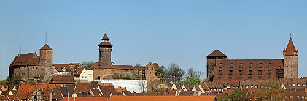
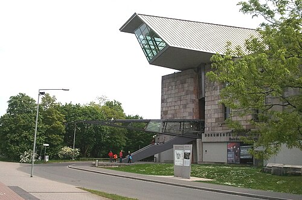

This map shows 14 of the most-searched sights in Nuremberg as photo spots, ranked by how often people search for them: Kaiserburg, Rally Grounds, Nuremberg Trials, Germanisches Museum and Hauptmarkt & Brunnen lead the list. Every spot has a pin on the subject and a phone icon showing where to stand, with tips for shooting it on your phone: which lens to use, how to frame it, a settings tip and the best time of day. Directions and Navigate buttons take you to the standing point on foot or by public transport. 3 spots are free to view; the full map is for members.
The 3 free photo spots
1Nuremberg Castle (Kaiserburg)

Nuremberg Castle is a group of medieval fortified buildings standing on a sandstone ridge above the historical centre. It is made up of the Imperial Castle (Kaiserburg), the former Burgraves' castle and the buildings added later by the city. The ridge setting is what makes it photograph so well: walls, towers and rooflines climb above you in layers, so even a quick snap feels dramatic. The first fortified buildings appear to date from around 1000, and for centuries German kings and emperors stayed here. Look for the round Sinwell Tower, a main keep from the later 13th century that was raised by a floor in the 1560s, and the Heathens' Tower beside the Imperial Chapel, a Romanesque double chapel built around 1200. Much of the castle was ruined in the air raids of 1944/45, and rebuilding took about thirty years, so what you see is a careful restoration. From the phone icon on the map, the castle is only a short step away, so you are shooting up at the walls rather than across at them. Take one wide shot to show the whole mass of stone, then move closer and pick out details such as tower tops, gateways and timber-framed corners. Keep your phone steady against your body or a wall, and check that the towers are not leaning by using the gridlines.
Where it is: In Nuremberg, Bavaria, on a sandstone ridge that rises above the historical centre (the old town). The castle overlooks the old town's streets and rooftops.
Shooting it on your phone
Lens: Start with the ultra-wide (0.5x) for the walls and towers close up, then switch to the default lens (1x) for a more natural view. Use telephoto (2x-5x, depending on your phone) for the tower tops and roof details.
Where to stand: Stand about 35 m south-west of the subject, at the phone icon on the map, and face north-east.
Framing: Turn on the gridlines and line up a tower or wall edge with a vertical line so the buildings do not seem to lean. Tilt the phone up only slightly, or step back, to keep the vertical lines straighter. For a second picture, zoom in on a single tower or gateway and let the sandstone fill the frame.
Settings tip: Tap the sky or the brightest stonework to focus, then lower the exposure slider a little so the sky does not turn white and the stone keeps its colour. If your phone has a panorama mode, you can try it along the base of the walls, but hold still and move slowly.
Best time: Soft morning or late-afternoon light usually flatters the sandstone better than harsh midday sun, and earlier in the day is often quieter.
2Nazi Party Rally Grounds Documentation Center

The Documentation Center sits inside the north wing of the Congress Hall, a huge, unfinished building left over from the Nazi party rallies. It is a museum about how those rallies were staged and what they led to. The Congress Hall was planned to hold 50,000 people but was never completed. The Austrian architect Günther Domenig won the 1998 competition for the museum with a bold idea: a diagonal glass-and-steel passageway driven through the northern end of the old building. It was unveiled on 4 November 2001. The contrast between the heavy curved stonework and the sharp, modern wedge is what makes the building so striking in a photo.
The main shot is taken from a point about 65 m north-west of the Documentation Center, looking south-east at it, so the glass wedge and the stone hall sit together in one frame. An alternative is the public shore of the Dutzendteich, a park with a lake shore facing the Congress Hall. From there the arched hall, the glass wedge and open sky can fit in one frame, and the lake gives a calm foreground and, on still days, may give a reflection. If you want to see the wedge close up, another viewpoint at the museum entrance shows the glass cutting into the stone facade from below. Another option is the Große Straße, the wide, straight axis of the former rally grounds.
The subject is a serious one, so photograph with respect and keep out of the way of other visitors. The museum has been rebuilding and running an interim exhibition, so check the official site before you go.
Where it is: The Documentation Center is in the former Nazi Party Rally Grounds in Nuremberg, inside the north wing of the Congress Hall. The Dutzendteich is a public park with a lake shore facing the Congress Hall.
Shooting it on your phone
Lens: Start with the default lens (1x) so the glass wedge and the surrounding hall fit in the frame. Switch to telephoto (2x-5x, depending on your phone) to pick out the glass-and-steel wedge against the stone. Use the ultra-wide (0.5x) only if you are close to the building and want to show its scale, and keep the horizon level.
Where to stand: Stand in Dutzendteich (lake shore across the water from the Congress Hall). The curved, arched Congress Hall with the Documentation Center's glass-and-steel wedge, seen across the lake under open sky. From here you see the curved, arched hall with the glass-and-steel wedge. As a separate alternative, you can try the public shore of the Dutzendteich, looking across the water at the Congress Hall.
Framing: Turn on gridlines and place the glass wedge off-centre, with the building along the upper line. Keep the phone level so the arches do not lean. If you shoot from the lake shore, place the water in the bottom third. For another view, take a close, upward shot of the glass entrance at the museum, or a long straight view down the Große Straße.
Settings tip: Tap on the building to set focus, then slide the exposure down a little so the sky keeps its detail and the glass does not blow out. Hold the phone steady with both hands, or rest it on a rail or wall, to keep the shot sharp.
Best time: If you try the lake shore, on still days the water may give a reflection.
3Nuremberg Trials Memorium
The Memorium Nuremberg Trials is a museum inside the Palace of Justice, the courthouse where the Nuremberg Trials were held between 1945 and 1949. It is a working piece of history rather than a pretty viewpoint, and that is what makes it worth a photo: a large, formal courthouse building with a serious story behind it. The permanent exhibition opened on 21 November 2010 in the attic of the east wing, directly above Courtroom 600. Since March 2020 that courtroom has no longer been used for court hearings and is part of the museum, so it is open to museum visitors. Outside, the best pictures are of the building itself: its long, strong lines suit a wide shot, and a few steps back lets you fit in more of the facade. Use the gridlines to keep the vertical edges straight, because tilting the phone upwards makes a tall building lean. Then move in and use zoom for details such as doorways, signs and stonework, which tell the story without needing the whole building in frame. Photography rules inside a museum can differ from room to room, and Courtroom 600 is a historic space that is now part of the museum exhibition, so ask staff or check the official site before you go. Be respectful of other visitors, and avoid taking pictures that put strangers in the foreground.
Where it is: In Nuremberg, at the Palace of Justice courthouse, which houses the Memorium Nuremberg Trials museum.
Shooting it on your phone
Lens: Start with the ultra-wide (0.5x) for the whole building from close range, then switch to the default lens (1x) for a more natural look. Use the telephoto/zoom (2x-5x, depending on your phone) for architectural details.
Where to stand: Stand right at the subject: the phone icon on the map marks the spot. If you need more of the facade in the frame, take a few steps back from the building while keeping the courthouse in view.
Framing: Turn on gridlines and line up the building's vertical edges with them so it doesn't lean. Take one wide shot of the whole building, then a closer detail shot of a doorway or sign. Portrait mode is better kept for a person standing in front of the building than for the building itself.
Settings tip: Tap the building to focus, then lower the exposure slider slightly if the sky is bright, so the stonework keeps its detail. If you take photos indoors, check the museum's rules first, and switch off flash.
Best time: Soft, even daylight, such as a bright overcast day, is kind to a large stone building. In sunshine, check the light on the facade when you arrive and wait for it to reach the front.
11 more spots for members
These spots are on the map as grey numbered pins. Where to stand, the phone tips, photos and directions for them come with Explorer membership.
- 4Germanisches Nationalmuseum and Way of Human Rights · members
- 5Hauptmarkt and Beautiful Fountain · members
- 6St. Lorenz Church · members
- 7St. Sebaldus Church · members
- 8Henkersteg (Hangman's Bridge) · members
- 9Frauenkirche · members
- 10Nuremberg Toy Museum · members
- 11Fleisch Bridge · members
- 12Albrecht Dürer's House · members
- 13Nassau House · members
- 14Nuremberg Town Hall · members
Get every spot with Explorer membership
Explorer opens every spot on every map in the library: where to stand, how to frame it on your phone and how to get there, plus the Xdatrys Maps app with maps saved on your phone for use without signal. $9.99 a month or $59.99 a year; cancel any time.
Join Explorer Compare free and Explorer
Not ready to join?
Get Pocket Lens, our free daily smartphone travel photography newsletter.
Free, and you can unsubscribe at any time. If the form does not show, sign up on our newsletter page.
Questions
What are the top photo spots in Nuremberg?
The first three on this map are Kaiserburg, Rally Grounds and Nuremberg Trials. They are ranked by how often people search for them. The full map has 14.
Where should I stand to photograph Kaiserburg?
Stand about 35 m south-west of Kaiserburg, at the phone icon on the map, and face north-east. Start with the ultra-wide (0.5x) for the walls and towers close up, then switch to the default lens (1x) for a more natural view.
When is the best time to photograph Rally Grounds?
If you try the lake shore, on still days the water may give a reflection.
How do I get to the Nuremberg Trials?
No tram or Underground stop is listed for this spot, so start from the centre of Nuremberg and head for the Palace of Justice (the courthouse that contains the museum), by taxi or hired scooter.
Credits
Map data © OpenStreetMap contributors (ODbL); base map built with Protomaps from OpenStreetMap data. Photos from Wikimedia Commons, credited under each photo with their licence. Background reading for the free spots: Nuremberg Castle, Documentation Center Nazi Party Rally Grounds, Memorium Nuremberg Trials (Wikipedia, CC BY-SA). Access rules and opening times change: check before you go.